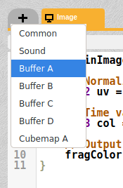
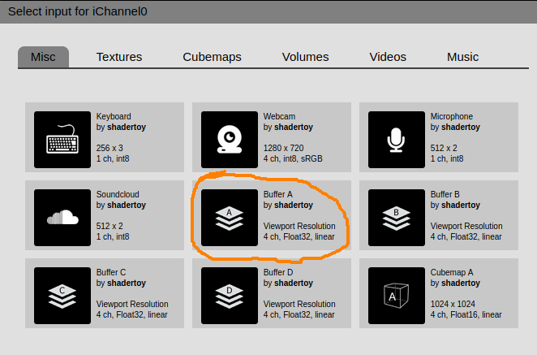

В ShaderToy можно иметь несколько буферов для формирования изображений. И в основном изображении можно использовать текстуру, сформированную с каком-либо буфере.
Буфер - это просто отдельный шейдер, который формирует некое изображение. Чтобы добавить буфер (первый буфер будет иметь название A), надо нажать на плюсик в верхней части экрана, и выбрать Buffer A:

Затем надо в этом буфере разместить код шейдера, который будет формировать требуемое изображение. Это изображение будет формироваться как-бы "в фоне", и не видно на экране.
Чтобы иметь возможность достучаться до этого изображения из основного шейдера, размещенного во вкладке Image, надо сделать следующее: находясь на вкладке Image (это важно!), надо нажать внизу страницы на iChannel0, и выбрать Buffer A:

После этой настройки, изображение, формирующееся шейдером на вкладке Buffer A будет доступно для шейдера на вкладе Image как текстура с именем iChannel0. И в основном шейдере (Image), цвет точки из данного буфера можно получить следующим кодом:
vec4 color=texture(iChannel0, fragCoord.xy);
Этим же способом можно формировать несколько буферов, и каждому буферу настраивать каналы, в которых указывать, какой другой буфер использовать в качестве источника графических данных. Другими словами, переключаясь между вкладками основного шейдера и буферами, можно заметить, что состав каналов внизу страницы для каждого буфера разный. То есть, каналы настраиваются не для всего онлайнового шейдера, а отдельно для каждого буфера. И если это понять, то таким механизмом очень просто пользоваться.